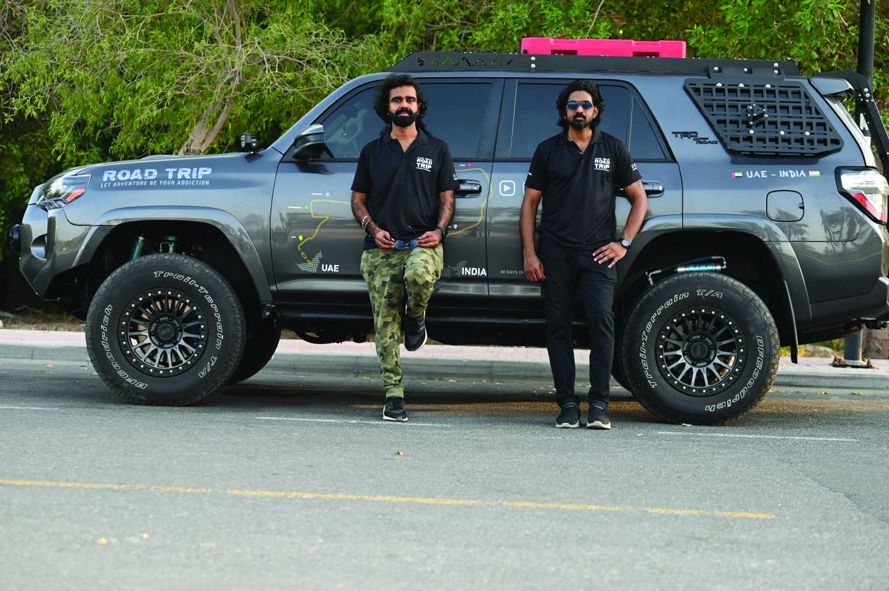
2024 — The First-Ever Duo to Complete a Self-Drive Overland Expedition from the UAE to India
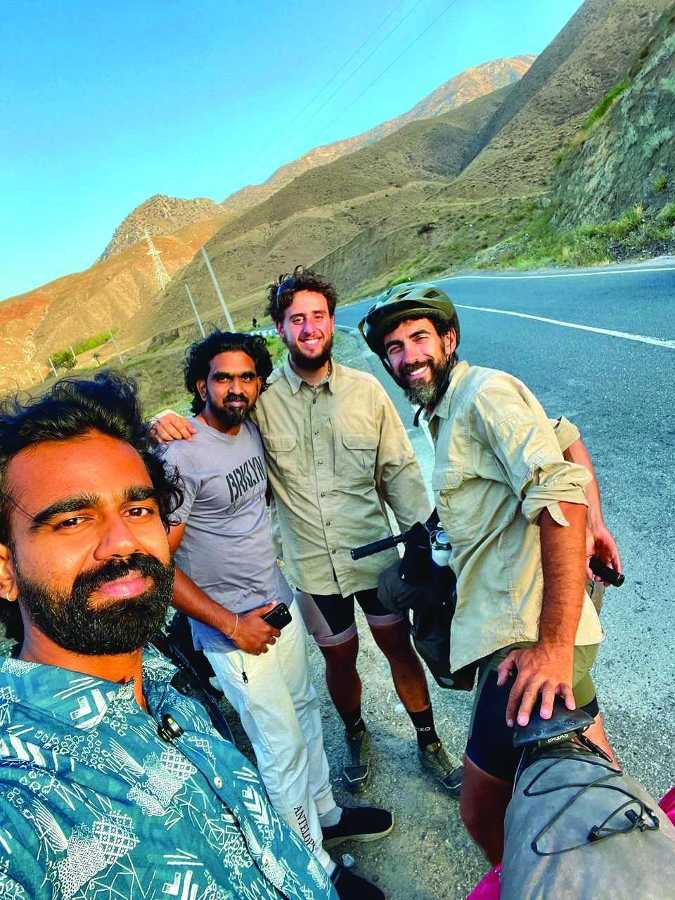
2024 — Met some travelers in Tajikistan

2024 Season 1 — Turkmenistan Uzbekistan border

2024 Season 1 — Iran-Turkmenistan border

2024 Season 1 — Afganistan border
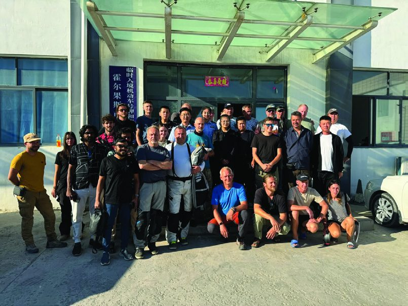
2024 — Season 1, The Crew in china
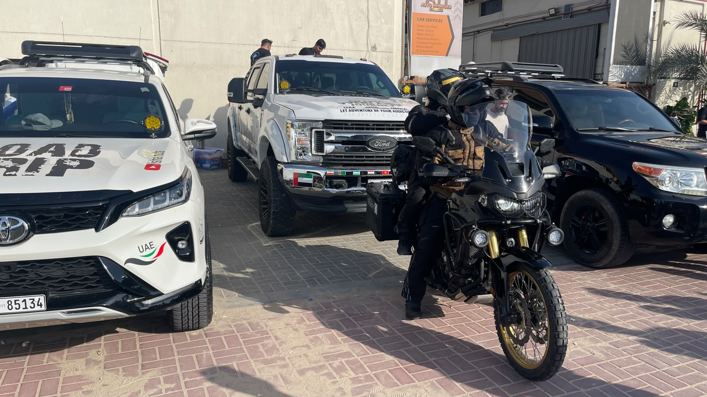
2025 Season 2 — April 20 Flagoff Day

2025 Season 2 Memories — Darvaza Gas Crater-Turkmenistan

2025 Season 2 Memories — Ashgabat-Turkmenistan
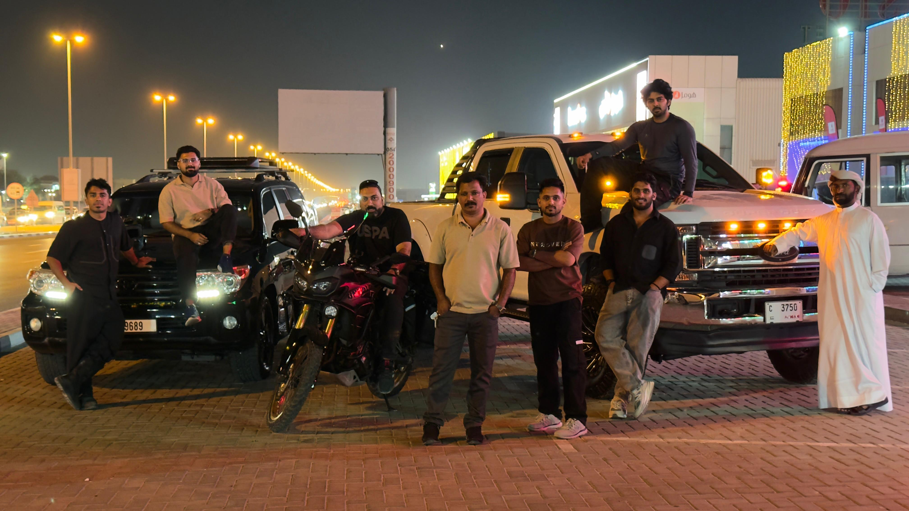
2025 Season 2 — Team
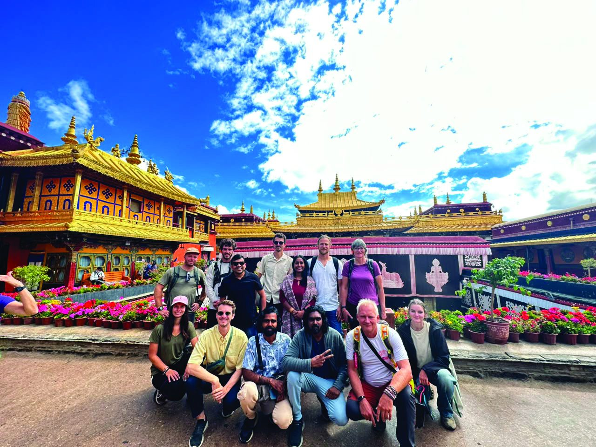
2024 — Season 1, Jokhang Monastry
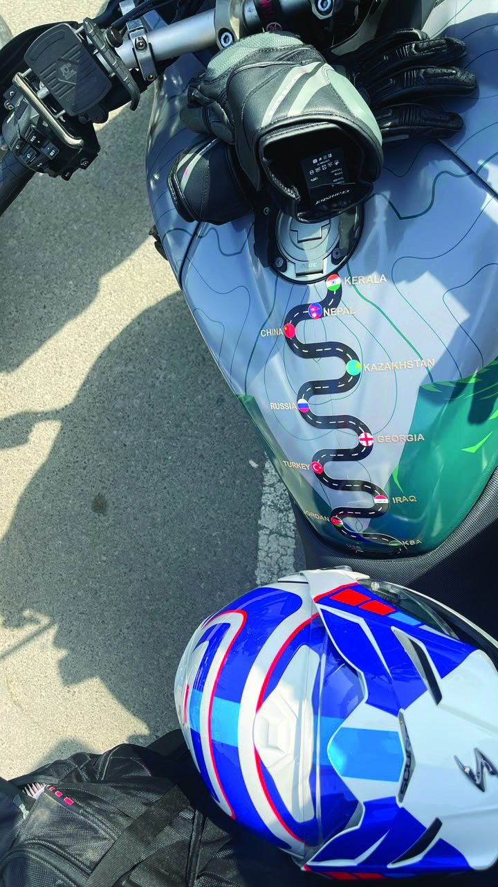
2026 — Season 3,Flag off day May 3 2026 from Dubai
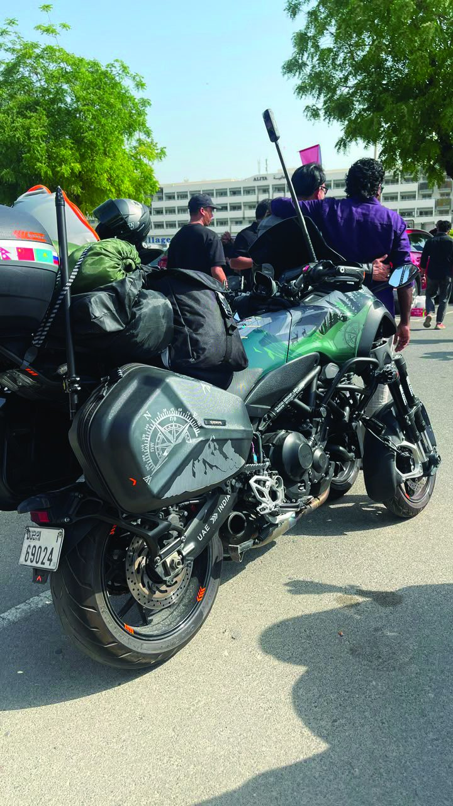
2026 — Season 3,Flag off day May 3 2026 from Dubai
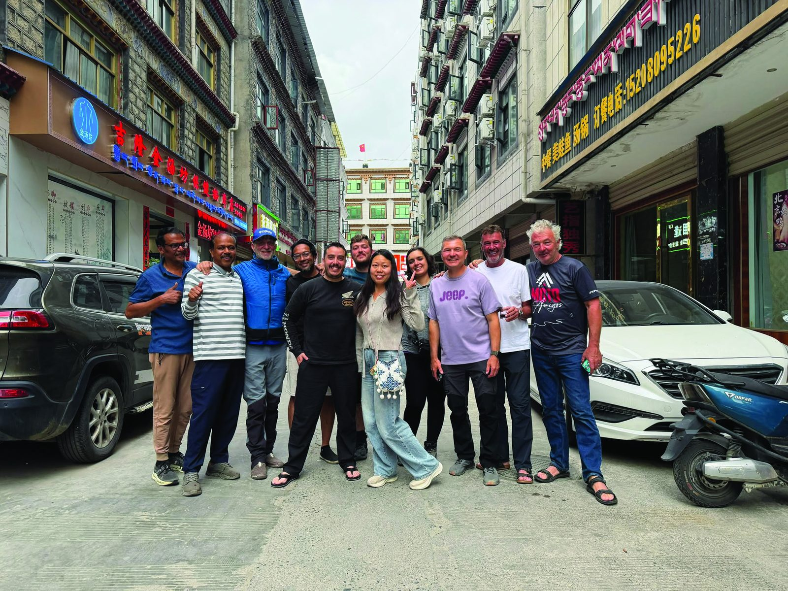
2026 — Season 3, The crew in China

2026 — Season 3, Toyota Landcruiser all the way from UK to INDIA

2026 — Season 2, The Team in China
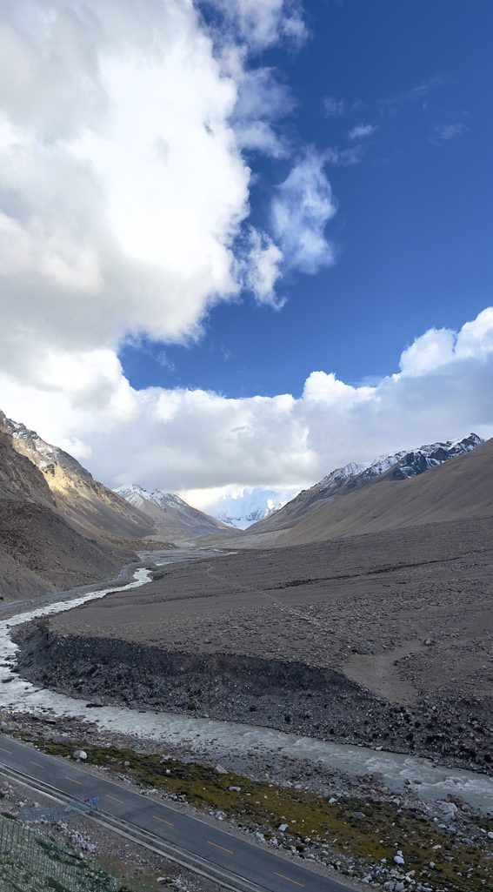
2024 Season 1 Memories — Mount Everest view from Everest Base Camp

2024 Season 1 Memories — Xigaze-Tibet
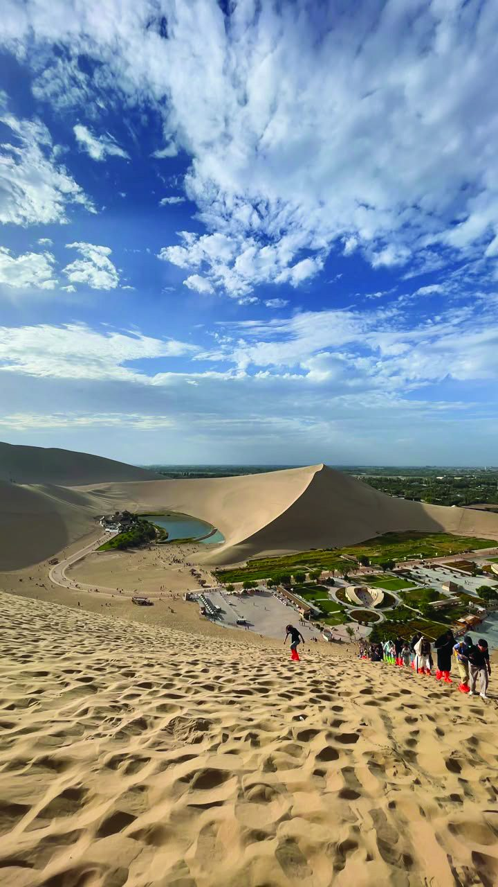
2024 Season 1 Memories — Mingsha Mountain and Crescent Spring
ARCHIVE — pulled from your brochure photos. Add captions/credits or swap any of these for higher-res originals whenever you're ready.